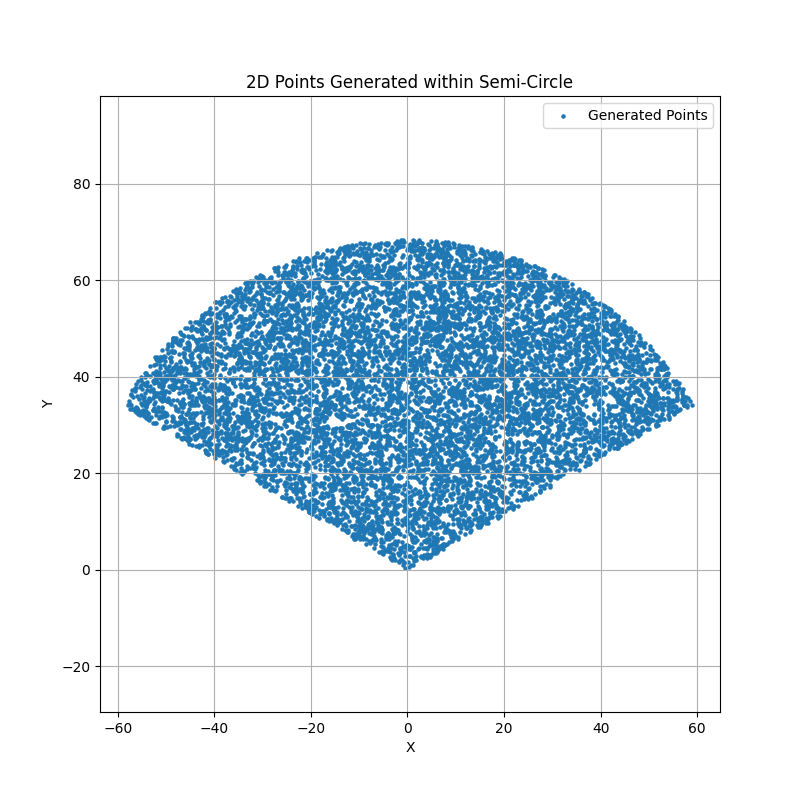
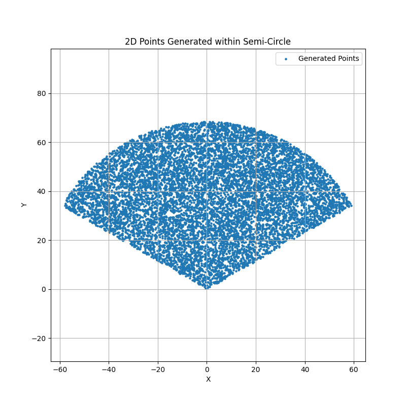
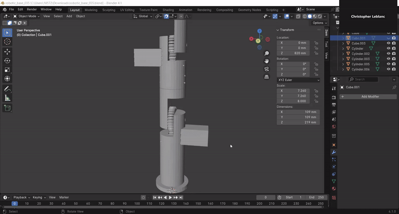
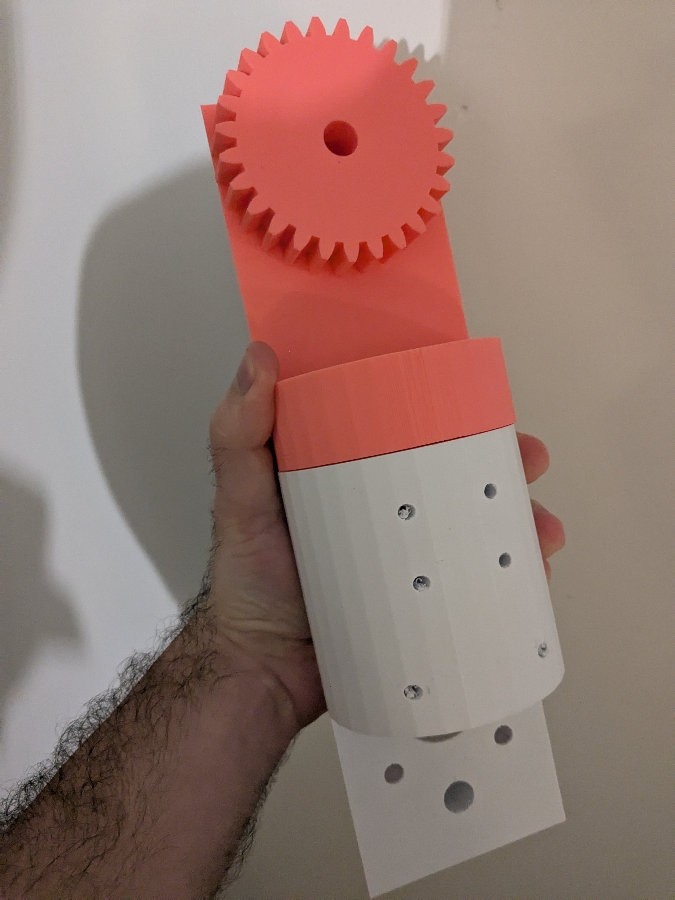

Background
The goal of this project was to use machine learning methods to teach a robotic agent to catch a ball, but to do that, I would need a dataset of the trajectories of tennis balls as they flew through the air. To my knowledge, no such dataset exists on the internet, so I had to make one myself.
2D Data Generation
A problem that I faced was that if I were to generate trajectories, not all of those could be catchable by the agent,
simply because some might be beyond its reach. So, to start, I wanted to generate points within a 2D workspace, because this 2D
space is an approximation of the projection onto the XY plane of the 3D points that are reachable by a robotic arm. This projection
looks like a semi-circle, which makes it fairly easy to generate random points within these bounds.
 To create points within a semi-circle, I generated a random length between 0 and the reach of the arm. From there, we can generate a random
angle between an upper and lower angle bounds. We then multiply this randomly generated length by the cosine of the random angle to get the
X position of the random point. Similarly, we can multiply the randomly generated length by the sine of the random angle to the Y position
of the random point. With this random (X, Y) point saved, I continue this process to generate a however many points I want within this 2D
space.

To create points within a semi-circle, I generated a random length between 0 and the reach of the arm. From there, we can generate a random
angle between an upper and lower angle bounds. We then multiply this randomly generated length by the cosine of the random angle to get the
X position of the random point. Similarly, we can multiply the randomly generated length by the sine of the random angle to the Y position
of the random point. With this random (X, Y) point saved, I continue this process to generate a however many points I want within this 2D
space.

3D Point Generation
Given a random (x,y) position within the working space, we use that as a starting point to throw the ball from. We generate a random starting
velocity between 2 and 7 m/s, as well as three random angles: psi, theta, and phi. The three angles are in relation to the x, y, and z axes,
respectively. With those parameters, the ball is thrown from that point at the initial velocity, which is decomposed into its dimensional components,
using the angles psi, theta, and phi.
On each time step, the drag force acting on the ball is calculated in each of the 3 dimensions. This is used to update the acceleration on the ball in
the 3 dimensions, which is then used to update the 3 velocity components. From the velocity, we update the ball’s (x,y,z) position. The position of the
ball is tracked until it either hits the ground (z=0) or it travels outside of the 3D range of the arm. Once that happens, the simulation stops. From
there, the time step of the trajectory is reversed, i.e., the ball is considered to be thrown from outside the working space, enters into the reach of
the arm, and then eventually lands on the ground, within the 2D working space. The reason that this is done is to generate trajectories of a ball that
the robotic agent has a reasonable chance to catch, with the assumption being that if the ball lands somewhere within the 2D working space of the arm,
the ball can be caught at some point before it hits the ground.
Figure 1: Forward Time, travelling out of the working space
Figure 2: Reverse Time, thrown outside the working space, landing in the 2D working space


Agent State
Before building the physical components of the robot, I wanted the agent to have 4 degrees of freedom, all rotational. The first frame is located at the base,
where it rotates around the z-axis. The second, third, and fourth frames all rotate about the x-axis. The final frame is located at the end of the last joint,
and this is the point from which the euclidean distance to the ball will be measured. The reference frame from which all distances are measured in relation to
is located at the base of the robotic agent, which is considered to be the point (0,0,0). On one time step, the actor chooses 4 thetas, which allows it to move
to a different position in space, with the selection of the thetas constituting one action. The agent is allowed to act until the ball is caught or hits the ground.
If either of those events occurs, the agent is set back to its initial position and a new episode begins.

Displacement Function
The displacement of the end effector is found using the homogeneous transformation matrix (H1 5) from frame 1 (base) to frame 5 (last frame). Knowing the bend angles of the actuators (θ1, θ2, θ3, θ4), we can find the displacement from the first frame to the second frame, the second frame to the third frame, and so on. With those HT matrices, we can multiply those to get the HT matrix from frame 1 to frame 5. This tells us the orientation and displacement of the end effector from the base of the agent. The actual position of the agent is represented as a function of the result of the homogeneous transformation from the first frame to the last frame, which is determined by the particular expression of the 4 thetas.


Model Training
For training the agent, I tried all manner of reinforcement learning methods,which all failed, but what did work was using supervised learning methods. At every time
step, the ball position and the position of the robot's end affector are known.
 To get the arm closer to the ball, I took the euclidean distance between the position of
the ball and the end affector to be an objective function, which can be minimized by doing gradient descent on (θ1, θ2, θ3, θ4). By figuring out how to change the thetas
to bring the arm as close as possible to the ball, eventually the agent learned how to catch the ball for any position within its working space.
To get the arm closer to the ball, I took the euclidean distance between the position of
the ball and the end affector to be an objective function, which can be minimized by doing gradient descent on (θ1, θ2, θ3, θ4). By figuring out how to change the thetas
to bring the arm as close as possible to the ball, eventually the agent learned how to catch the ball for any position within its working space.

Design and Construction
With the model working in simulation, I began working on building the robot in real life, but in switching from the simulation to the physical construction, I had to remove a motor, because there would be an issue with powering it. With 3 actuators, the robot can be powered by a standard 15 amp outlet, versus the 4 actuators robot requiring a 20 amp outlet.
To house the motors, I designed the frame in Blender and am currently in the process of 3D printing out the parts.  